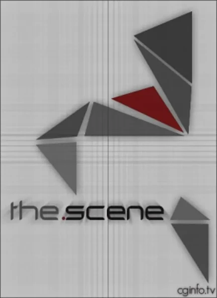

Сериал · 2004 · Драма, Криминал
Канадский веб-сериал о «Сцене» (the Scene) — закрытом мире пиратских релиз-групп, где статус определяется рейтингом, а преждевременная утечка контента равносильна войне. Сюжет строится вокруг конфликта двух группировок и лидера, который хочет выйти из игры, не расплатившись с долгами. Несмотря на скромный бюджет, сериал обладает уникальной достоверностью: он ближе всего к истине о системе, которую правообладатели называют «пиратством», а сами участники — работой.
A Canadian web series about 'the Scene' — the closed world of piracy release groups, where rating defines status and an early leak equals war. The plot follows a conflict between two groups and one leader who wants out without repaying his debts. Low budget, but unique texture: closer than anything else to the truth about the system copyright holders call 'piracy' and its participants call work.